Principios de programación con Python · Curso CES
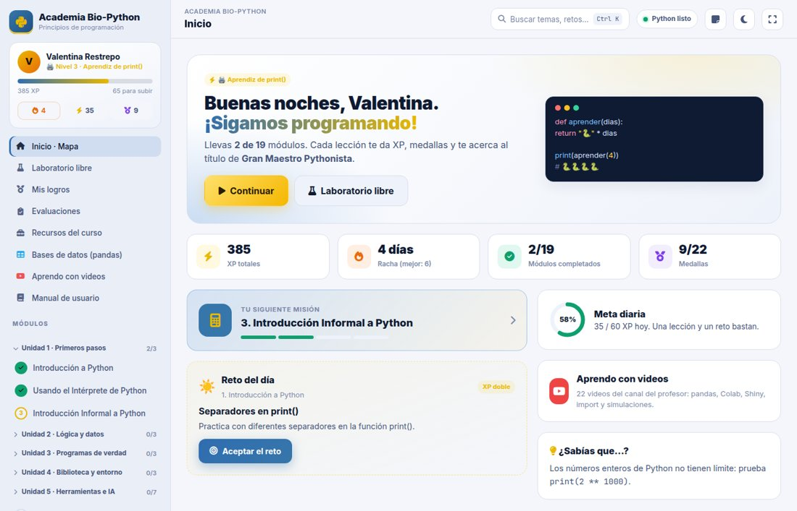
Academia Bio-Python es una aplicación web para aprender Python desde cero. Reúne en un solo lugar los videos, las lecturas, la práctica de código, los retos y las evaluaciones del curso Principios de programación con Python.
Está pensada para que aprender se sienta como un juego: cada módulo es una misión de cuatro pasos y cada avance da puntos de experiencia (XP), sube de nivel y desbloquea medallas. Todo el código se ejecuta con Python real dentro del navegador, sin instalar nada.
Idea de uso. Dedica un rato cada día: mira la lección, prueba los ejemplos en el laboratorio, supera los retos y termina con el quiz. Una lección y un reto bastan para cumplir la meta diaria y mantener viva tu racha.
| Lo que encontrarás | Para qué sirve |
|---|---|
| 19 módulos en 5 unidades + 3 opcionales | Desde la instalación de Python hasta clases, biblioteca estándar y herramientas de IA; como bonus, Actividades Extras, Bases de datos con pandas y el Libro del curso (PDF). |
| Laboratorio de código | Escribir y ejecutar Python, con errores explicados en español. |
| Retos con verificación automática | Saber al instante si tu programa produce los resultados correctos. |
| Quizzes interactivos | Repasar la teoría con respuesta inmediata. |
| Evaluaciones y recursos | Quizzes y parciales oficiales, libro del curso, guías y más. |
index.html de la carpeta).Tu progreso se guarda en el navegador que usas. Si cambias de computador, de navegador o borras los datos de navegación, la aplicación empieza de cero. Usa siempre el mismo equipo y navegador si quieres conservar tus puntos y medallas. Cada estudiante tiene su propio progreso aunque compartan computador.
| Zona | Qué contiene |
|---|---|
| Tarjeta del jugador | Tu nombre, nivel, barra de XP (cuánto falta para subir), racha 🔥, XP de hoy ⚡ y medallas. |
| Secciones | Inicio · Mapa, Laboratorio libre, Mis logros, Evaluaciones, Recursos del curso, Bases de datos (pandas), Aprendo con videos y Manual de usuario. |
| Módulos | Las 5 unidades (se despliegan con un clic) y los módulos opcionales (bonus) «Actividades Extras», «Bases de datos con pandas» y «Libro del curso (PDF)», marcados con ★. El círculo de cada módulo muestra su número, amarillo si está en curso y verde con ✓ si está completado. |
| Barra superior | Dónde estás, el buscador (Ctrl+K), el estado de Python (amarillo: cargando; verde: «Python listo»), tus notas, el tema claro/oscuro y la pantalla completa. |
| Avisos | Aparecen abajo a la derecha: XP ganados, archivos descargados, etc. |
La barra lateral se oculta. Ábrela con el botón ☰ arriba a la izquierda y ciérrala tocando fuera de ella. El laboratorio y el quiz se acomodan en una sola columna.
El botón de la luna o el sol cambia entre tema claro y oscuro; la aplicación recuerda tu elección.
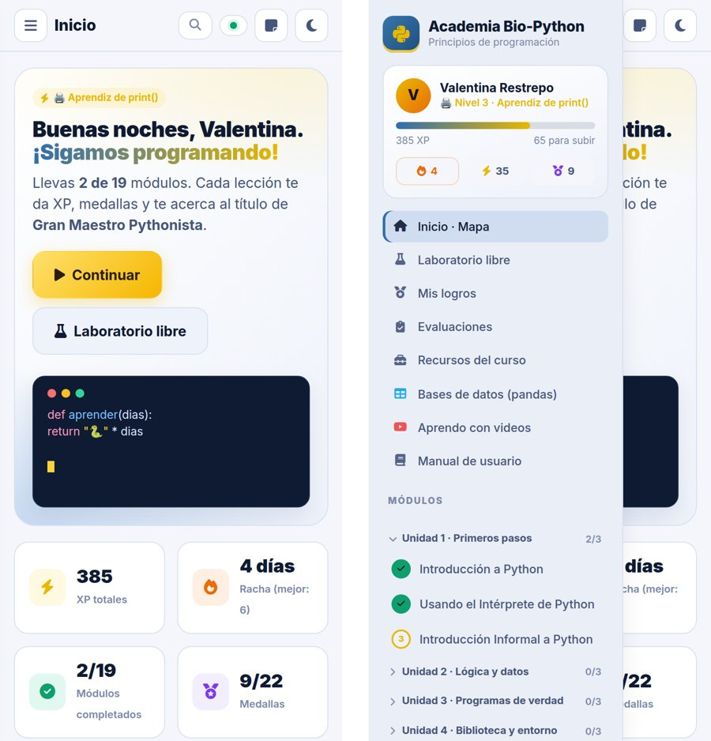
El inicio te recibe con un saludo y resume tu avance:
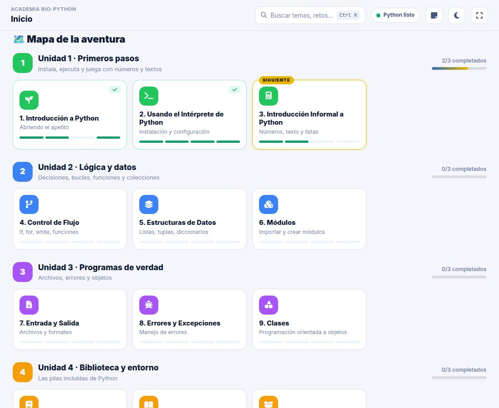
Más abajo está el mapa de la aventura: cada unidad muestra cuántos módulos completaste y cada tarjeta tiene cuatro barras que se vuelven verdes a medida que haces sus pasos. Puedes abrir cualquier módulo en cualquier orden, pero la etiqueta SIGUIENTE te indica el recomendado.
Al abrir un módulo verás su encabezado (unidad, título y flechas ← → para ir al módulo anterior o siguiente) y la fila de pasos. El paso actual se resalta en azul y los terminados muestran el número en verde. Algunos módulos tienen pasos extra, como Colab o Shiny, con material adicional.
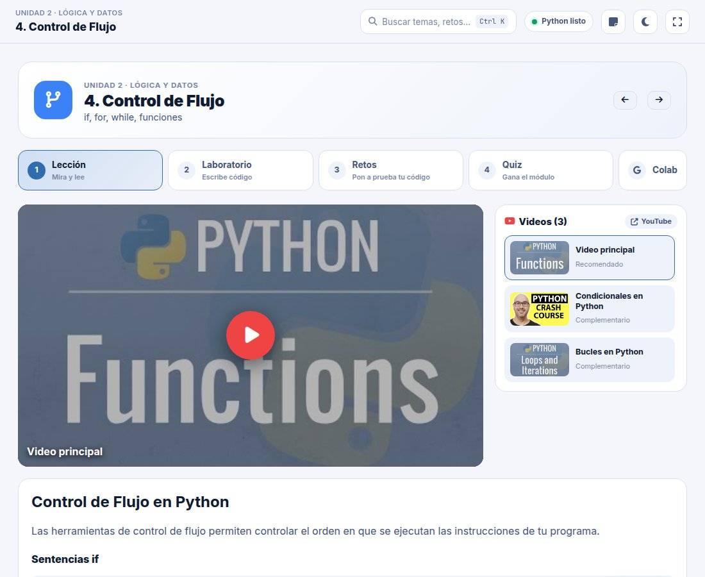
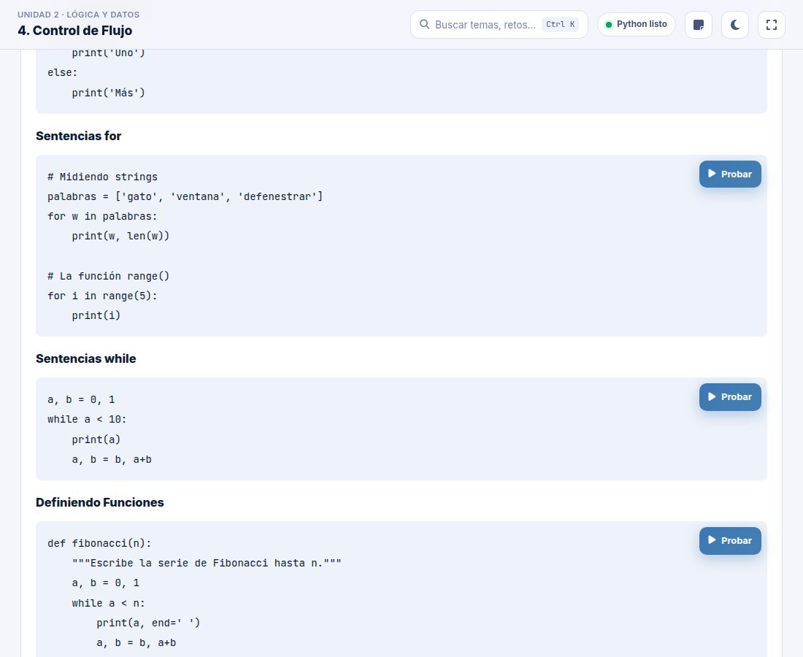
El laboratorio es tu espacio para experimentar. A la izquierda está el editor y a la derecha la consola, donde aparece lo que imprime tu programa.
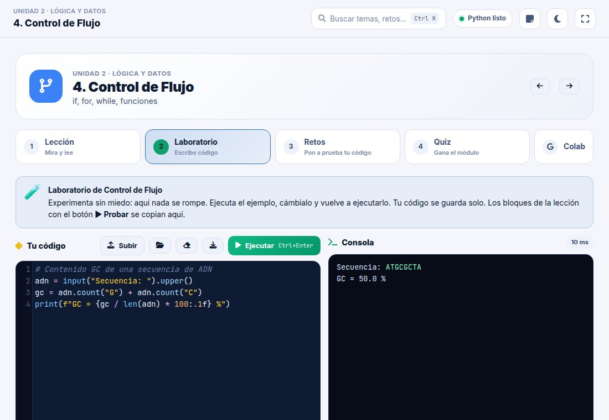
input(), escribe los datos en Entradas para input(), uno por línea. Si faltan datos, el navegador te los preguntará en una ventanita.input() aparecen en verde.| Botón o tecla | Qué hace |
|---|---|
| ▶ Ejecutar · Ctrl+Enter | Ejecuta el programa. |
| Borrador | Deja el editor vacío. |
| Descargar | Guarda el código como archivo .py para usarlo en Colab, Cursor o tu computador. |
| Tab / Shift+Tab | Aumenta o reduce la sangría (4 espacios). |
| Ctrl+/ | Convierte en comentario (o descomenta) las líneas seleccionadas. |
Tu código se guarda solo: si cierras la aplicación y vuelves, lo encontrarás donde lo dejaste.
Puedes usar numpy, matplotlib o pandas; se descargan al importarlos y los gráficos aparecen en la consola.
Si el programa falla, debajo de la consola aparece Profe Pitón: dice en qué línea está el problema, lo explica en español y sugiere cómo arreglarlo. Abajo, en letra pequeña, queda el mensaje original de Python.
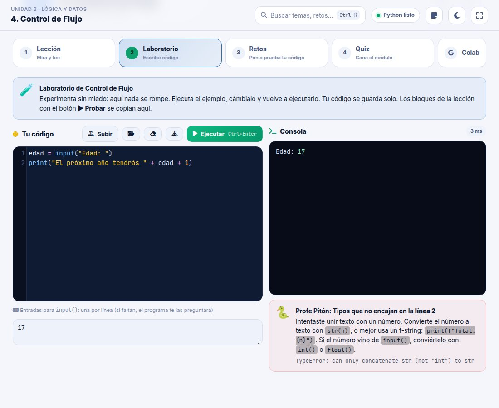
"El próximo año tendrás " + edad + 1 mezcla texto y número: Profe Pitón sugiere usar int() o un f-string.Equivocarse es parte de aprender: si corriges un error y vuelves a ejecutar con éxito, ganas la medalla Cazabugs. Si el programa entra en un bucle infinito, la aplicación lo detiene sola y te avisa.
Cada reto propone un programa para escribir. Pulsa el título para abrirlo: verás el enunciado, un editor con la plantilla (los comentarios dicen qué completar), la caja de entradas y la consola.
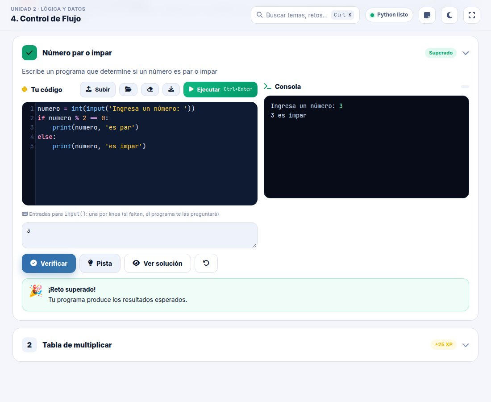
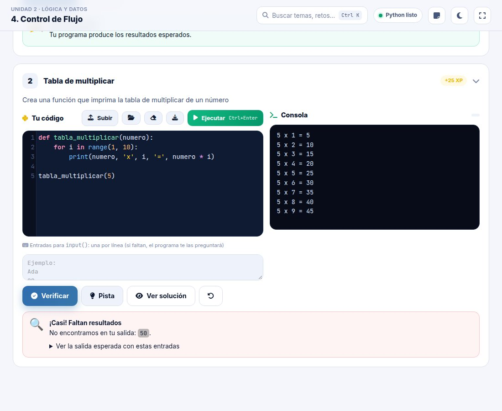
range(1, 10): falta la línea 5 x 10 = 50, por eso la verificación pide el valor 50.| Botón | Qué hace |
|---|---|
| Verificar | Compara tu salida con la de la solución. No exige las mismas palabras: exige los mismos números (con los decimales pedidos) y las palabras clave (por ejemplo «par» o «impar»). |
| Pista | Da ideas sin revelar la solución (funciones que hay que definir, fórmulas, cuántos print() usa). |
| Ver solución | Pide confirmación y carga la solución. El reto valdrá 8 XP en lugar de 25. |
| ↺ | Vuelve a la plantilla original. |
Algunos retos se practican fuera del navegador (por ejemplo los de Flask o Cursor). En ellos verás «Ya lo hice» para marcarlos cuando los completes en Colab o en tu computador.
Puedes repetir el quiz: las preguntas cambian de orden y se guarda tu mejor resultado. Solo dan XP las respuestas correctas que superen tu mejor intento anterior.
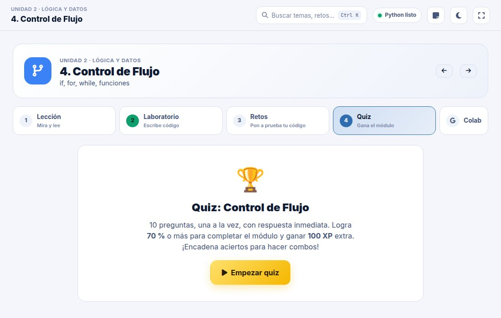
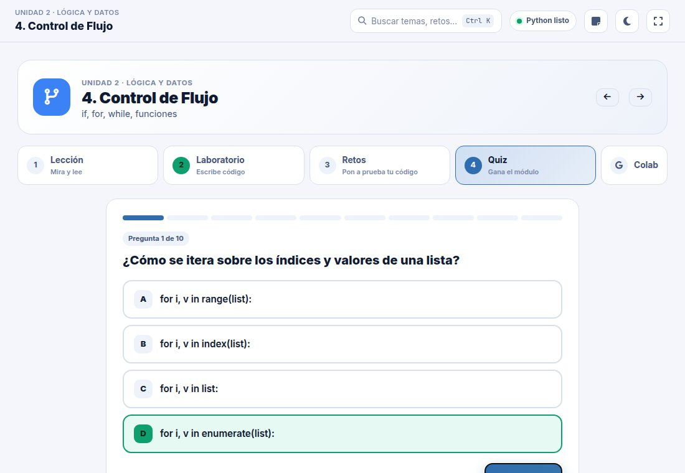
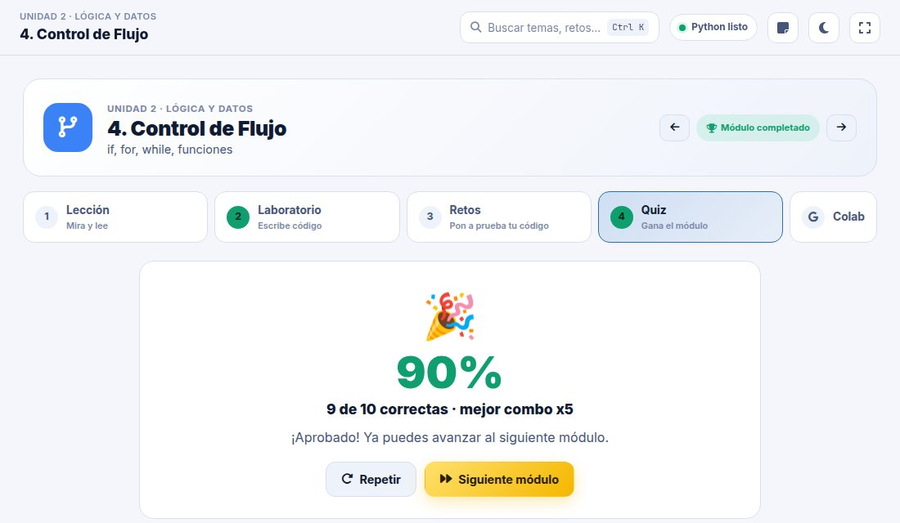
| Acción | XP |
|---|---|
| Marcar la lección como leída («¡Lo entendí!») | 15 |
| Primer programa que se ejecuta sin errores en el laboratorio del módulo | 10 |
| Reto superado sin ver la solución / con la solución | 25 / 8 |
| Reto del día | doble |
| Cada respuesta correcta nueva en un quiz | 8 |
| Módulo completado (quiz con 70 % o más) | 100 |
Hay 11 niveles, desde «Huevo de pitón» (0 XP) hasta «Gran Maestro Pythonista» (4200 XP), y 22 medallas (primer programa, Cazabugs, Quiz perfecto, Combo x5, racha de 3 y 7 días, Graficador…). La racha cuenta los días seguidos en que ganas XP: si un día no estudias, vuelve a empezar. Cuando subes de nivel, ganas una medalla o completas un módulo, aparece una celebración.
En Mis logros ves tus estadísticas (programas ejecutados, retos, errores corregidos, mejor racha), todas las medallas (las grises aún están bloqueadas), la lista de niveles y la tabla de XP.
Al completar los 19 módulos del curso (los opcionales no son necesarios) se activa el botón Diploma, que abre un diploma con tu nombre, nivel, XP y medallas, listo para imprimir o guardar en PDF.
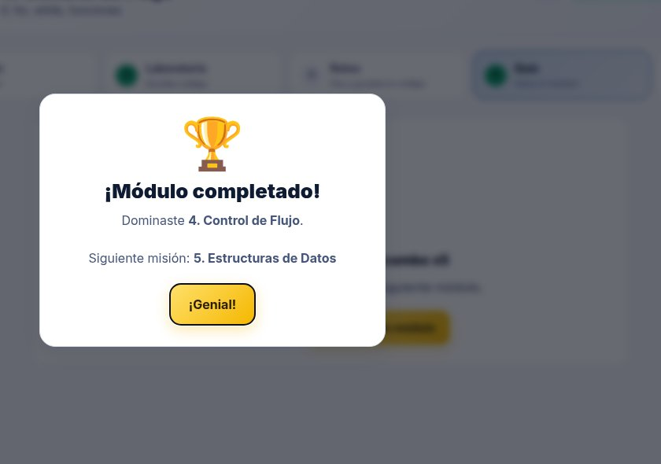
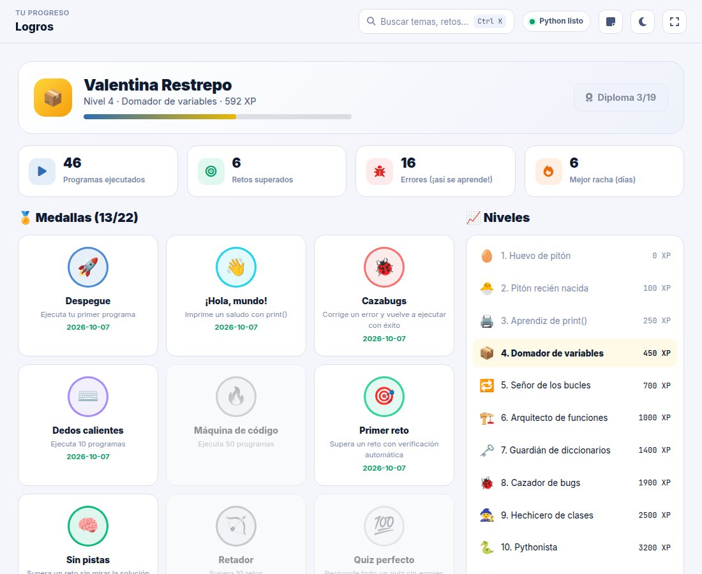
Es un laboratorio que no pertenece a ningún módulo, ideal para tus propios programas. Arriba tiene experimentos de Bio-Python listos para ejecutar: complemento de ADN, transcribir a ARN, IMC con funciones, gráfico de población, temperaturas y «Adivina el número». Al pulsar uno se carga y se ejecuta.
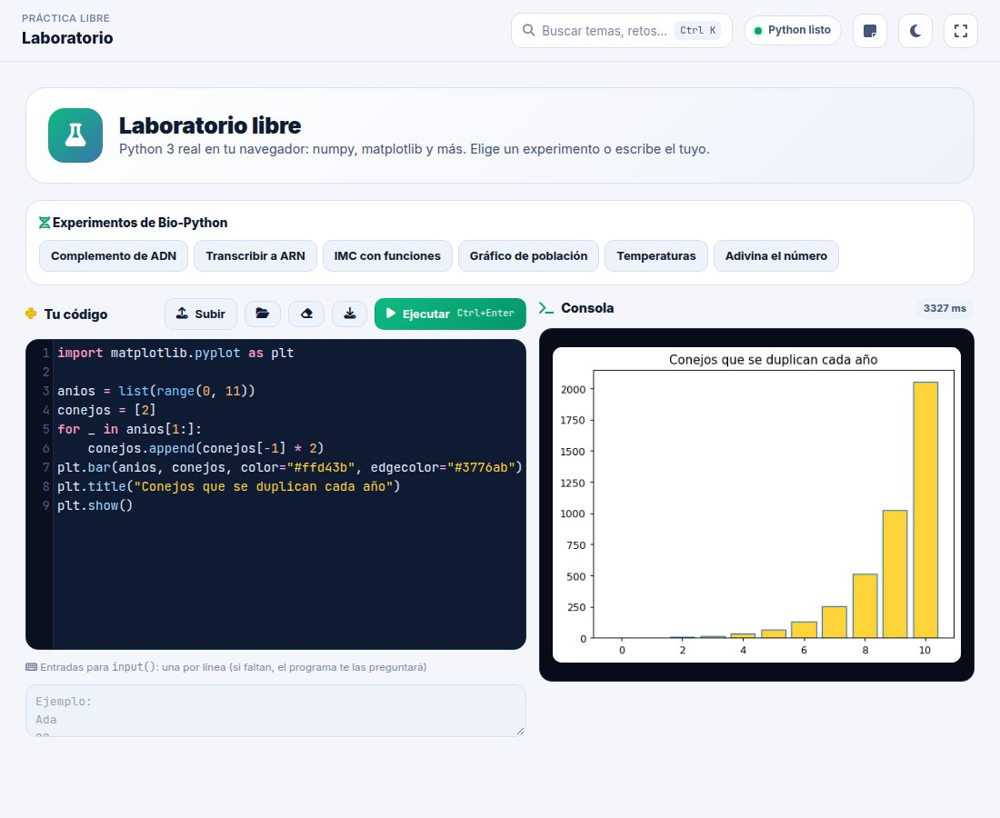
El módulo opcional Bases de datos con pandas (en el bonus del mapa y en la barra lateral como Bases de datos (pandas)) enseña a manejar tablas de datos de cualquier disciplina con la librería pandas, tanto en la plataforma como en Google Colab. Tiene los mismos pasos que los demás módulos: Lección, Laboratorio, 10 retos, un quiz de 12 preguntas y el paso extra Colab. Como todo el bonus, da XP y medallas pero no cuenta para el progreso del curso ni para el diploma.
Tiene 16 temas con un índice de botones para saltar a cada uno: qué es un DataFrame, plataforma o Colab, crear DataFrames, cargar datos del PC, explorar, seleccionar, filtrar, ordenar, crear columnas, limpiar datos, agrupar y resumir, combinar tablas, fechas y texto, gráficos, exportar y un resumen rápido. Cada ejemplo tiene ▶ Probar.
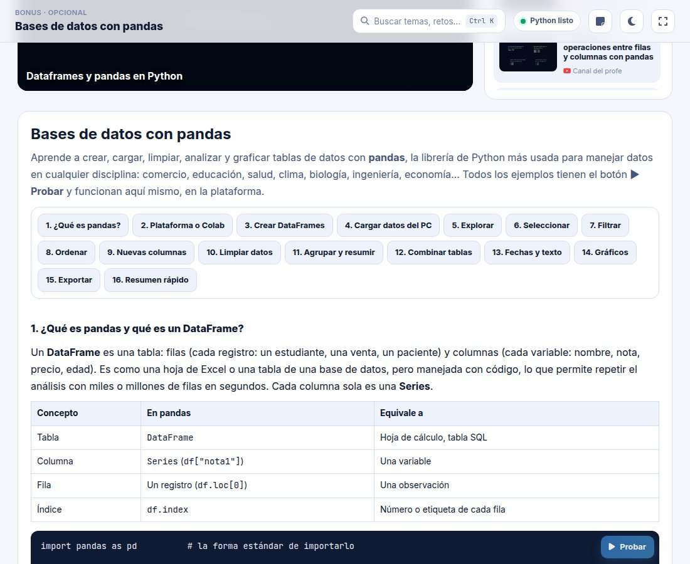
Seis archivos ya están cargados en el Python de la plataforma, así que se leen directamente con pd.read_csv("ventas.csv").
En la lección (tema 4) cada uno tiene un botón para descargarlo y usarlo en Colab o en Excel.
| Archivo | Disciplina | Contenido |
|---|---|---|
ventas.csv | Comercio | 120 ventas por fecha, región y producto |
productos.csv | Comercio | Categoría y precio de 8 productos (para unir con ventas) |
estudiantes.csv | Educación | Notas y asistencia de 40 estudiantes de 5 programas |
clima.csv | Meteorología | Temperaturas y lluvia diaria de Medellín, Bogotá y Cali en marzo |
pacientes.csv | Salud | Edad, peso, altura y presión de 50 pacientes, con faltantes y duplicados para practicar limpieza |
plantas.csv | Biología | Medidas de sépalos y pétalos de 45 flores de 3 especies |
.csv, .xlsx, .json o .txt.import pandas as pd.mostrar(df) dibuja la tabla con sus filas y columnas.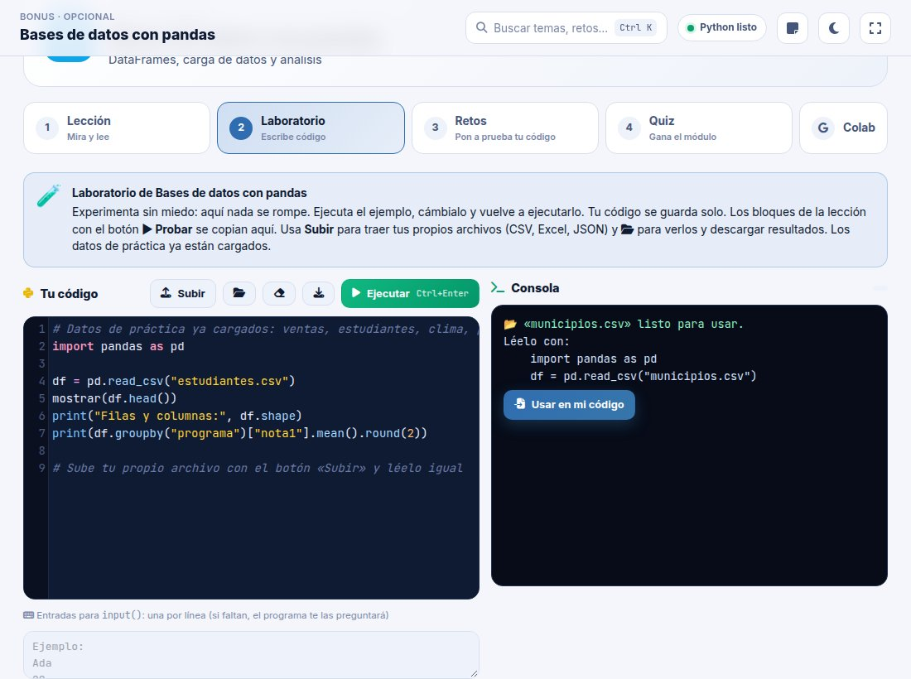
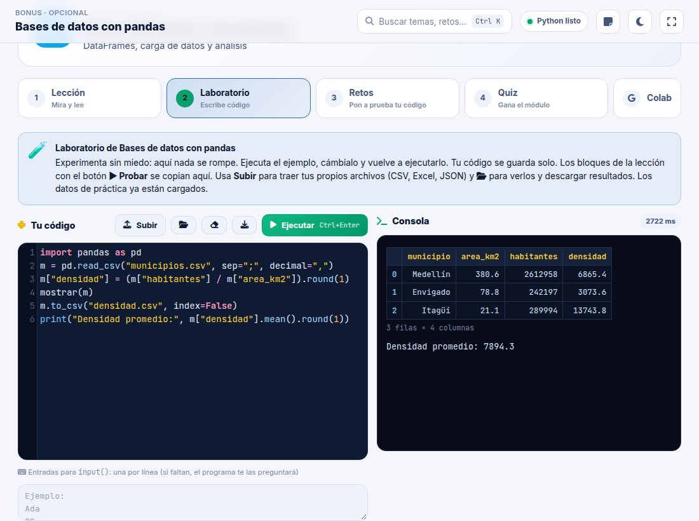
sep=";", decimal=","): se calcula la densidad, mostrar(m) dibuja la tabla y se guarda «densidad.csv».El botón con el ícono de carpeta (junto a Subir) abre Archivos de Python: la lista de archivos que tu código
puede leer (los tuyos, los creados con to_csv o to_excel y los de práctica), con Usar y
Descargar.
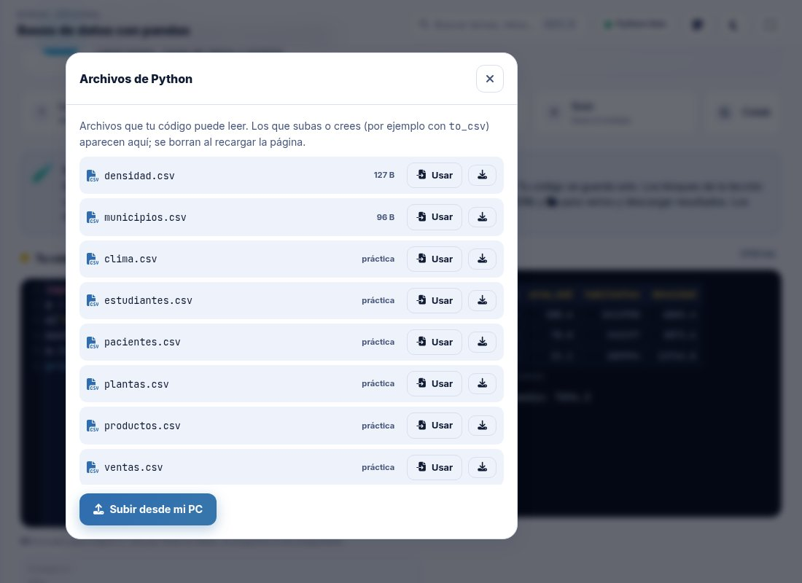
Los archivos subidos viven en la memoria del navegador: se borran al recargar la página. Tus datos no salen de tu computador.
Es una guía para hacer lo mismo en Google Colab: crear el notebook, las cinco formas de cargar datos desde el PC (panel de archivos,
files.upload(), Google Drive, una URL y Google Sheets), leer Excel, y guardar y descargar resultados con
files.download().
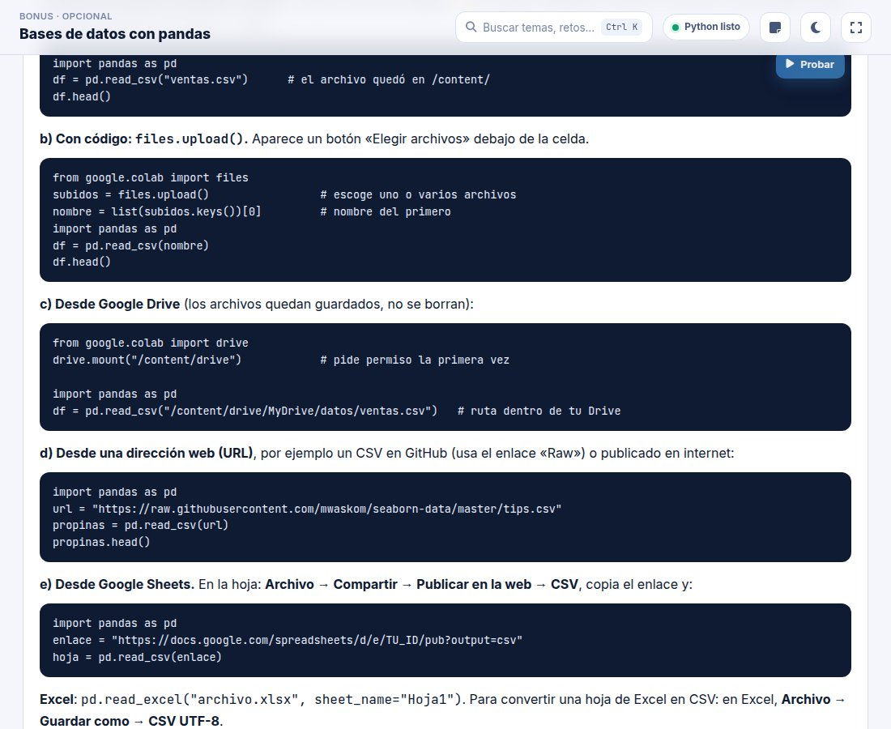
Los 10 retos usan los datos de práctica: crear un DataFrame, total vendido, estudiantes aprobados, temperatura por ciudad, limpiar datos de pacientes, índice de masa corporal por sexo, los 3 productos más vendidos, ventas por categoría (uniendo dos tablas), medidas por especie y ventas por mes. La verificación compara los números de tu salida con los de la solución, así que puedes imprimirlos a tu manera.
En la barra lateral, Aprendo con videos reúne los videos del canal de YouTube del profesor John Jairo Estrada relacionados con el curso, organizados por tema. Pulsa un video para verlo en el reproductor de arriba; a la derecha verás su tema, botones para ir a las partes de la aplicación relacionadas y Abrir en YouTube. El botón Ver el canal completo abre el canal.
Los videos necesitan internet. Si abres la aplicación como archivo de tu computador (no desde su página web), YouTube puede mostrar «Error 153»: usa Abrir en YouTube o entra por la dirección publicada de la aplicación.
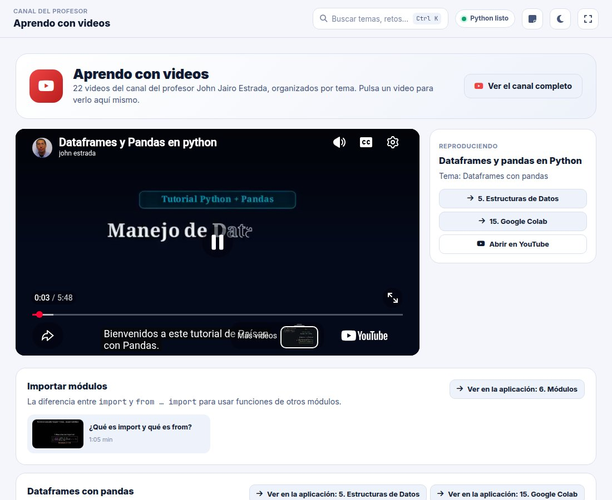
| Tema | Videos | Partes de la aplicación relacionadas |
|---|---|---|
| Importar módulos | 1 | 6. Módulos |
| Dataframes con pandas | 4 | 5. Estructuras de Datos · 15. Google Colab |
| De la unidad de observación al dataframe (apoyo) | 4 | 5. Estructuras de Datos |
| Google Colab | 3 | 15. Google Colab |
| Cargar datos CSV en Colab | 2 | 15. Google Colab · 7. Entrada y Salida |
| Shiny for Python | 2 | Recursos: Shiny for Python · Conceptos clave de Shiny |
| Modelos y simulaciones en biología (apoyo) | 6 | Laboratorio libre |
Los videos del canal también aparecen en la lista de videos de la lección de cada módulo relacionado, marcados con Canal del profe. Al final de la sección se listan los módulos que aún no tienen videos del canal.
Evaluaciones reúne los 4 quizzes y 4 parciales oficiales. Cada tarjeta abre una página con el botón para iniciar la evaluación (en una ventana nueva), el código QR para abrirla desde el celular y el enlace directo (al pulsarlo se copia).
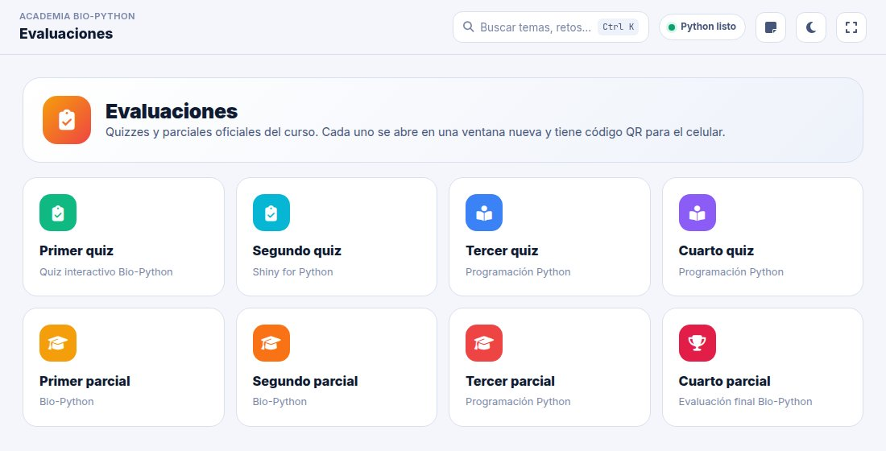
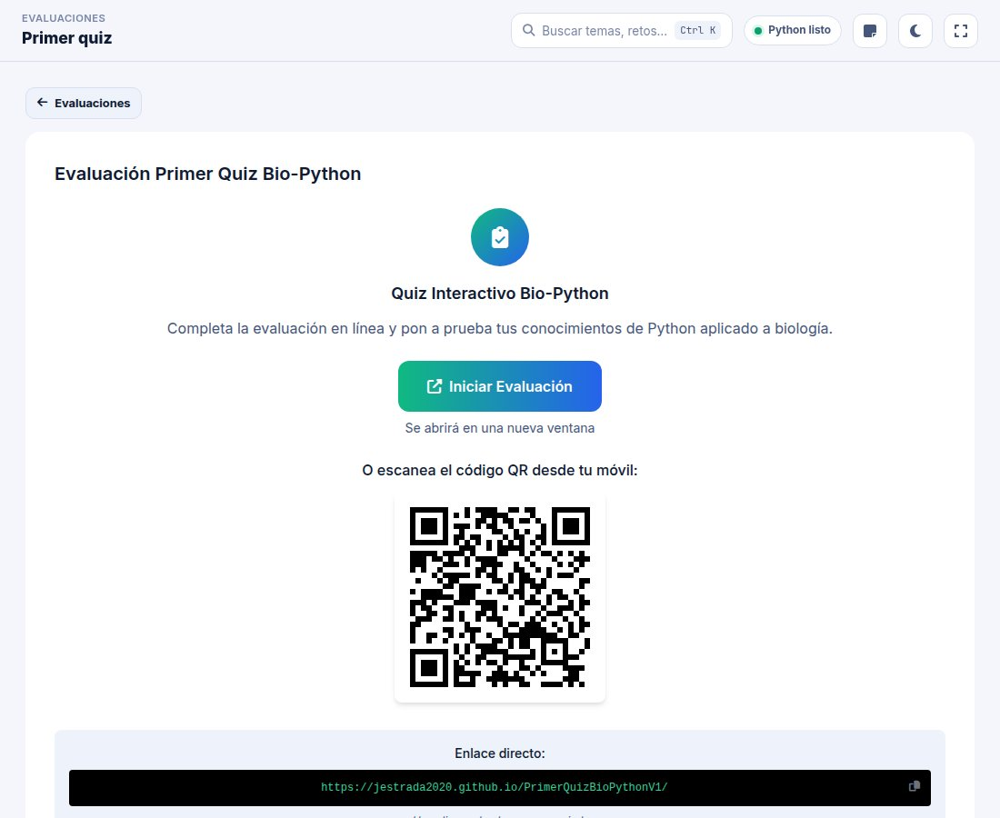
El módulo opcional Libro del curso (PDF) (en el bonus del mapa y al final de la lista de módulos) muestra el libro Curso de programación: Python, R con RStudio y automatización con n8n (98 páginas) dentro de la academia. El botón Ver en ventana emergente lo abre en una ventana aparte (si el navegador la bloquea, la aplicación avisa) y Descargar PDF lo guarda en tu computador. Como no tiene quiz, se completa con Marcar como completado.
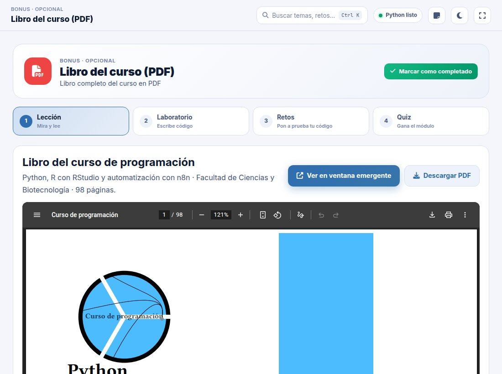
Recursos del curso contiene el libro del curso en PDF, el resumen clave de Python, páginas recomendadas, Shiny for Python y sus conceptos clave, el editor de LaTeX (Overleaf), la guía de GitHub, el HTML de entregas y este manual. El botón ← Recursos del curso regresa a las tarjetas.
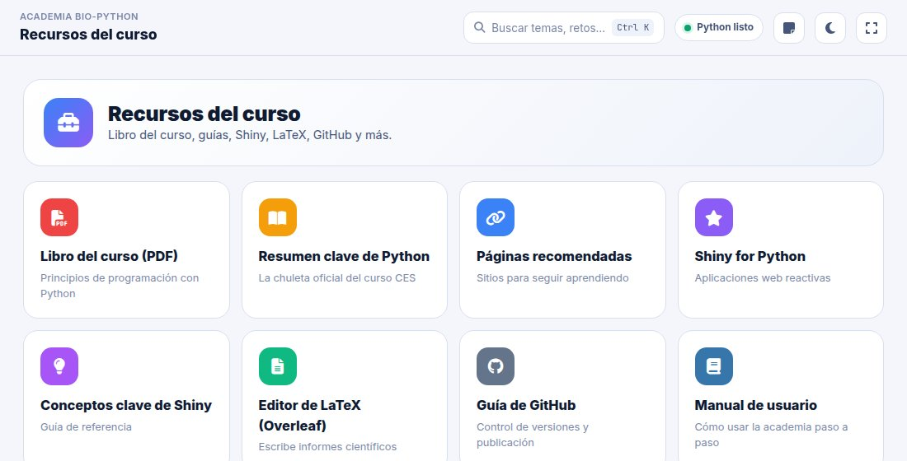
Pulsa Buscar temas, retos… o Ctrl+K y escribe una palabra: aparecen módulos, retos, quizzes, evaluaciones y recursos relacionados (también busca dentro del texto de las lecciones). Muévete con las flechas y abre con Enter.
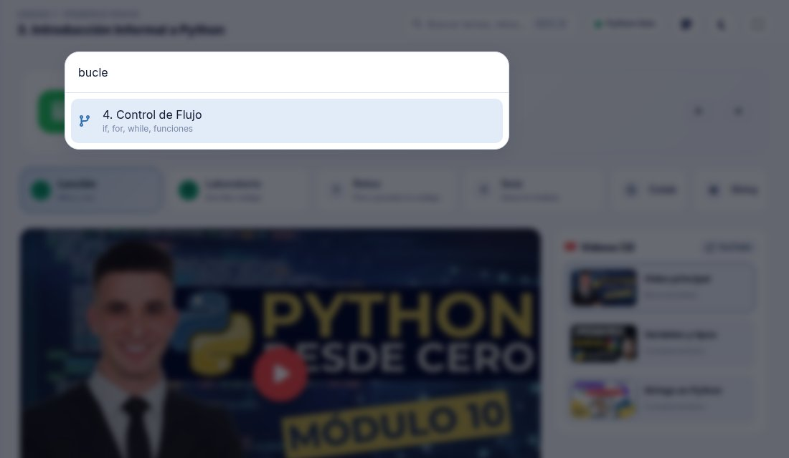
El botón de notas (arriba a la derecha) abre un cuaderno para el módulo en el que estás (o notas
generales en el inicio). Guardar las conserva en el navegador y Descargar todas crea un
archivo mis_notas_biopython.md con las notas de todos los módulos.
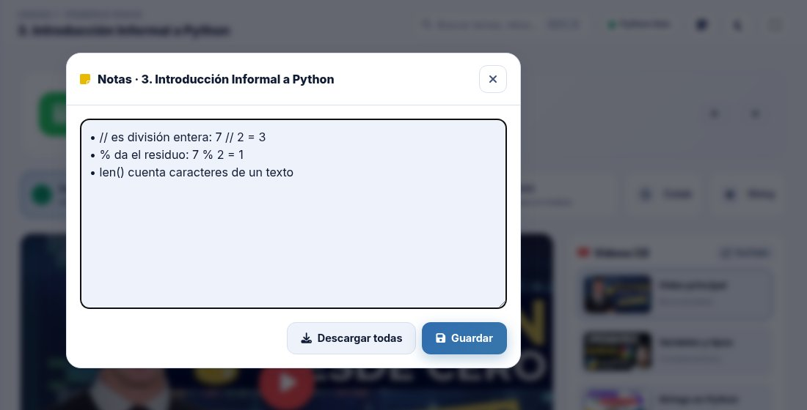
Estos son los errores más comunes al empezar y cómo los explica Profe Pitón.
| Error de Python | Qué significa | Cómo se arregla |
|---|---|---|
SyntaxError | Una línea está mal escrita. | Revisa los dos puntos : después de if, for, def…, comillas y paréntesis cerrados. |
IndentationError | La sangría no es correcta. | El bloque después de : va 4 espacios a la derecha; las líneas del mismo bloque, alineadas. |
NameError | Python no conoce ese nombre. | Revisa mayúsculas y ortografía; crea la variable antes de usarla; pon los textos entre comillas. |
TypeError | Tipos que no encajan (por ejemplo texto + número). | Convierte con int(), float() o str(), o usa f-strings. |
ValueError | Un texto no se puede convertir a número. | Revisa las entradas; usa punto decimal (3.5), no coma. |
ZeroDivisionError | División entre cero. | Comprueba con if que el divisor no sea 0. |
IndexError | Posición que no existe en la lista. | Las posiciones empiezan en 0; usa len(). |
KeyError | Clave que no está en el diccionario. | Usa dic.get(clave) o if clave in dic. |
AttributeError | Ese dato no tiene ese método. | Por ejemplo, en listas se usa .append(), no .push(). |
EOFError | Faltan datos para input(). | Escribe un dato por línea en «Entradas para input()». |
| ¿Bucle infinito? | El programa no terminaba y se detuvo. | Asegúrate de que la condición del while llegue a ser falsa. |
Este manual está dentro de la aplicación: en la barra lateral pulsa Manual de usuario (también está en Recursos del curso). Se muestra en un visor y tiene dos botones:
manual_usuario.pdf.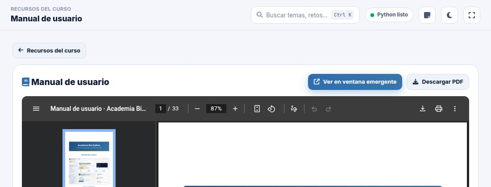
| Situación | Causa y solución |
|---|---|
| El indicador dice «Preparando Python…» mucho tiempo | La primera descarga de Python tarda según la conexión. Espera; si dice «Python sin conexión», revisa internet y recarga la página. |
| Desaparecieron mis puntos y medallas | El progreso se guarda en el navegador. Abre la aplicación en el mismo computador y navegador de siempre, sin modo incógnito. |
| «ID/C.C. o contraseña incorrectos» | Revisa mayúsculas y espacios. Si el problema sigue, pide al profesor que confirme tu usuario. |
| El programa pide datos en una ventanita | Tu programa usa input() y no había datos en «Entradas». Escríbelos ahí, uno por línea, para no tener que teclearlos cada vez. |
| La verificación dice «¡Casi!» aunque mi programa funciona | Faltan resultados que pide el enunciado (por ejemplo los decimales o una línea). Abre «Ver la salida esperada» y compárala con la tuya. |
| «Este reto se practica fuera del navegador» | Usa librerías que no funcionan en el navegador (Flask) o no es código Python. Hazlo en Colab o en tu computador y pulsa «Ya lo hice». |
ModuleNotFoundError | El módulo no existe o no funciona en el navegador (por ejemplo, un módulo propio en otro archivo). Pruébalo en Colab o en tu computador. |
| El video muestra «Error 153» o no se reproduce | YouTube no reproduce videos incrustados cuando la aplicación se abre como archivo local, y todos necesitan internet. Usa «Abrir en YouTube» (en la lista de videos de la lección o en Aprendo con videos) o entra por la dirección publicada. |
| No se abre una evaluación o el manual en ventana nueva | El navegador bloqueó la ventana emergente. Permite las ventanas emergentes para este sitio, o usa el enlace directo / «Descargar PDF». |
| Subí un archivo y ya no aparece | Los archivos subidos se borran al recargar la página. Súbelo otra vez con «Subir». |
| El CSV se lee en una sola columna o con números raros | Probablemente usa punto y coma y coma decimal (Excel en español): pd.read_csv("a.csv", sep=";", decimal=","). Si las tildes se ven mal, agrega encoding="latin-1". |
| En «Mis logros» aparece «Registro para tu profesor» | Tu profesor activó el registro: la academia le envía tus horas de ingreso y salida y tus actividades (lecciones, retos, notas de los quizzes). |
| En el celular no veo el menú | Toca el botón ☰ arriba a la izquierda. |
js/auth.js. El procedimiento detallado está en
_seguridadBasica.md.js/modules-data.js. Un reto es { title, description, template, solution }; una pregunta es
{ question, options, correct }. El archivo README.md explica cómo agregar módulos, evaluaciones y recursos.data/ y, para el navegador, en
js/datos-pandas.js; el módulo está en js/modulo-pandas.js.docs/crear_formularios.gs en
script.google.com (función crearFormularios) y copie el bloque REGISTRO_CONFIG que imprime en
js/registro-config.js. Desde ese momento la academia envía sola la hora de ingreso, la de salida y la duración de cada
sesión, y las lecciones, retos, notas de los quizzes (0 a 5) y módulos completados a la hoja «Academia Bio-Python · Registros».docs/manual_usuario.html y genere el PDF con Chrome:
google-chrome --headless --no-pdf-header-footer --print-to-pdf=manual_usuario.pdf manual_usuario.html
(desde la carpeta docs).Los usuarios y contraseñas de js/auth.js son visibles para quien abra el código de la
página publicada. No use contraseñas personales de los estudiantes.